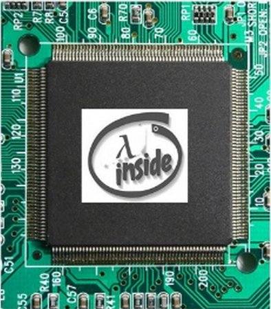

丘奇和图灵
丘奇（Alonzo Church）和图灵（Alan Turing）是两位对计算机科学具有最大影响力的人物，然而他们却具有非常对立的观点和相差很多的名气。在我长达16年的计算机科学生涯中，总是感觉到自己的思想反反复复的徘徊于这两个“阵营”之间。丘奇代表了“逻辑”和“语言”，而图灵代表着“物理”和“机器”。在前面的8年中，我对丘奇一无所知，而在后面的8年中，我却很少再听到图灵的名字。他们的观点谁对谁错，是一个无法回答的问题。完全投靠丘奇，或者完全投靠图灵，貌似都是错误的做法。这是一种非常难说清楚的，矛盾的感觉，但是今天我试图把自己的感悟简要的介绍一下。
丘奇与图灵之争
想必世界上所有的计算机学生都知道图灵的大名和事迹，因为美国计算机器学会（ACM）每年都会颁发“图灵奖”，它被誉为计算机科学的最高荣誉。大部分的计算机学生都会在某门课程（比如“计算理论”）学习“图灵机”的原理。然而，有多少人知道丘奇是什么人，他做出了什么贡献，他与图灵是什么样的关系呢？我想恐怕不到一半的人吧。
如果你查一下数学家谱图，就会发现丘奇其实是图灵的博士导师。然而从 Andrew Hodges 所著的《图灵传》，你却可以看到图灵的心目中仿佛并没有这个导师，仿佛自己的“全新发明”应得的名气，被丘奇抢走了一样（注意作者的用词：robbed）。事实到底是怎样的，恐怕谁也说不清楚。我只能说，貌似计算机科学从诞生之日开始就充满了各种“宗教斗争”。
虽然现在图灵更加有名，然而在现实的程序设计中，却是丘奇的理论在起着绝大部分的作用。据我的经验，丘奇的理论让很多事情变得简单，而图灵的机器却过度的复杂。丘奇所发明的 lambda calculus 以及后续的工作，是几乎一切程序语言的理论基础。而根据老一辈的计算机工程师们的描述，最早的计算机构架也没有受到图灵的启发，那是一些电机工程师完全独立的工作。然而有趣的是，继承了丘奇衣钵的计算机科学家们拿到的那个大奖，仍然被叫做“图灵奖”。我粗略的算了一下，在迄今所有的图灵奖之中，程序语言的研究者占了近三分之一。
从图灵机到 lambda calculus
图灵机永远的停留在了理论的领域，绝大多数被用在“计算理论”（Theory of Computation）中。计算理论其实包括两个主要概念：“可计算性理论”（computability）和“复杂度理论”(complexity）。这两个概念在通常的计算理论书籍（比如 Sipser 的经典教材）里，都是用图灵机来叙述的。在学习计算理论的时候，绝大多数的计算机学生恐怕都会为图灵机头痛好一阵子。
然而在做了研究生“计算理论”课程一个学期的 TA 之后我却发现，其实几乎所有计算理论的原理，都可以用 lambda calculus，或者程序语言和解释器的原理来描述。所谓“通用图灵机”（Universal Turing Machine），其实就是一个可以解释自己的解释器，叫做“元解释器”（meta-circular interpreter）。在 IU 的程序语言理论课程中，我最后的项目就是一个 meta-circular interpreter。这个解释器能够完全的解释它自己，而且可以任意的嵌套（也就是说用它自己来解释它自己，再来解释它自己……）。然而我的“元解释器”却是基于 lambda calculus 的，所以我后来发现了一种方法，可以完全的用 lambda calculus 来解释计算理论里面几乎所有的定理。
我为这个发现写了两篇博文：《A Reformulation of Reducibility》和《Undecidability Proof of Halting Problem without Diagonalization》。我把 Sipser 的计算理论课本里面的几乎整个一章的证明都用我自己的这种方式改写了一遍，然后讲给上课的学生。因为这种表示方法比起通常的“图灵机+自然语言”的方式简单和精确，所以收到了相当好的效果，好些学生对我说有一种恍然大悟的感觉。
我把这一发现告诉了我当时的导师 Amr Sabry。他笑了，说这个他早就知道了。他推荐我去看一本书，叫做《Computability and Complexity from a Programming Perspective》，作者是大名鼎鼎的 Neil Jones (他也是“Partial Evaluation”这一重要概念的提出者）。这本书不是用图灵机，而是一种近似于 Pascal，却又带有 lambda calculus 的一些特征的语言（叫做 “WHILE 语言”）来描述计算理论。用这种语言，Jones 不但轻松的证明了所有经典的计算理论定理，而且能够证明一些使用图灵机不能证明的定理。
我曾经一直不明白，为什么可以如此简单的解释清楚的事情，计算理论需要使用图灵机，而且叙述也非常的繁复和含糊。由于这些证明都出于资深的计算理论家们之手，让我不得不怀疑自己的想法里面是不是缺了点什么。可是在看到了 Jones 教授的这本书之后，我倍感欣慰。原来一切本来就是这么的简单！
后来从 CMU 的教授 Robert Harper 的一篇博文《Languages and Machines》中，我也发现 Harper 跟我具有类似的观点，甚至更加极端一些。他强烈的支持使用 lambda calculus，反对图灵机和其他一切机器作为计算理论的基础。
从 lambda calculus 到电子线路
当我在 2012 年的 POPL 第一次见到 Neil Jones 的时候，他跟我解释了许多的问题。当我问到他这本书的时候，他对我说：“我不推荐我的书给你，因为大部分的人都觉得 lambda calculus 难以理解。”Lambda calculus 难以理解？我怎么不觉得呢？我觉得图灵机麻烦多了。然后我才发现，由于经过了这么多年的研究之后，自己对 lambda calculus 的理解程度已经到了深入骨髓的地步，所以我已经全然不知新手对它是什么样的感觉。原来“简单”这个词，在具有不同经历的人头脑里，有着完全不同的含义。
所以其实 Jones 教授说的没错，lambda calculus 也许对于大部分人来说不合适，因为对于它没有一个好的入门指南。Lambda calculus 出自逻辑学家之手，而逻辑学家们最在行的，就是把很简单的“程序”用天书一样的公式表示出来。这难怪老一辈的逻辑学家们，因为他们创造那些概念的时候，计算机还不存在。但是如果现在还用那一堆符号，恐怕就有点落伍了。大部分人在看到 beta-reduction, alpha-conversion, eta-conversion, … 这大堆的公式的时候，就已经头痛难忍了，怎么还有可能利用它来理解计算理论呢？
其实那一堆符号所表示的东西，终究超越不了现实里的物体和变化，最多不过再幻想一下“多种未来”或者“时间机器”。有了计算机之后，这些符号公式，其实都可以用数据结构和程序语言来表示。所以 lambda calculus 在我的头脑里真的很简单。每一个 lambda 其实就像是一个电路模块。它从电线端子得到输入，然后输出一个结果。你把那些电线叫什么名字根本不重要，重要的是同一根电线的名字必须“一致”，这就是所谓的“alpha-conversion”的原理…… 不在这里多说了，如果你想深入的了解我心目中的 lambda calculus，也许可以看看我的另一篇博文《怎样写一个解释器》，看看这个关于类型推导的幻灯片的开头，或者进一步，看看如何推导出 Y combinator，或者看看《What is a program?》。你也可以看看 Matthias Felleisen 和 Matthew Flatt 的《Programming Languages and Lambda Calculi》。
所以，也许你看到了在我的头脑里面并存着丘奇和图灵的影子。我觉得丘奇的 lambda calculus 是比图灵机简单而强大的描述工具，然而我却又感染到了图灵对于“物理”和“机器”的执着。我觉得逻辑学家们对 lambda calculus 的解释过于复杂，而通过把它理解为物理的“电路元件”，让我对 lambda calculus 做出了更加简单的解释，把它与“现实世界”联系在了一起。

所以到最后，丘奇和图灵这两种看似矛盾的思想，在我的脑海里得到了和谐的统一。这些精髓的思想帮助我解决了许多的问题。感谢你们，计算机科学的两位鼻祖。